Einen B2C Mandanten in Commerce einrichten
Important
Dynamics 365 Retail ist jetzt Dynamics 365 Commerce und bietet umfassende Handelsfunktionen für alle Kanäle – von E-Commerce über Shops bis hin zu Callcentern. Weitere Informationen zu diesen Änderungen finden Sie unter Microsoft Dynamics 365 Commerce.
In diesem Thema wird beschrieben, wie Sie Ihren Azure Active Directory (Azure AD) Business-to-Consumer-Mandanten (B2C) für die Authentifizierung von Benutzerseiten in Dynamics 365 Commerce einrichten.
Übersicht
Dynamics 365 Commerce Verwendet Azure AD B2C zur Unterstützung von Benutzeranmeldeinformationen und Authentifizierungsabläufen. Ein Benutzer kann sich über diese Flows anmelden, sich anmelden und sein Kennwort zurücksetzen. Azure AD B2C speichert vertrauliche Benutzerauthentifizierungsinformationen wie Benutzername und Kennwort. Der Benutzerdatensatz im B2C-Mandanten speichert entweder einen lokalen B2C-Kontodatensatz oder einen B2C-Datensatz für Anbieter sozialer Identität. Diese B2C-Datensätze werden mit dem Kundendatensatz in der Commerce-Umgebung verknüpft.
Erstellen oder Verknüpfen eines vorhandenen AAD B2C-Mandanten im Azure-Portal
Melden Sie sich beim Azure-Portal an.
Wählen Sie im Azure-Portalmenü die Option aus Erstellen Sie eine Ressource. Stellen Sie sicher, dass Sie das Abonnement und das Verzeichnis verwenden, die mit Ihrer Commerce-Umgebung verbunden werden.
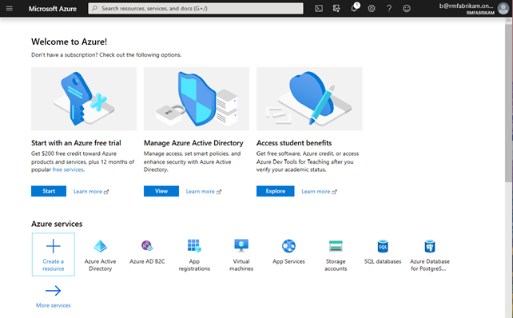
Gehe zu Identität > Azure Active Directory B2C.
Einmal auf der Seite Erstellen Sie einen neuen B2C-Mandanten oder einen Link zu einem vorhandenen Mandanten verwenden Sie auf der folgenden Seite eine der folgenden Optionen, die den Anforderungen Ihres Unternehmens am besten entspricht:
- Erstellen Sie einen neuen Azure AD B2C Mandanten: Verwenden Sie diese Option, um einen neuen AAD B2C-Mandanten zu erstellen.
- Wählen Sie Neuen Azure AD B2C Mandant erstellen.
- Unter Name der Organisation geben Sie den Namen der Organisation ein.
- Unter Anfänglicher Domainname geben Sie den ursprünglichen Domainnamen ein.
- Für Land oder Region wählen Sie das Land oder die Region aus.
- Wählen Sie Erstellen, um den Mieter zu erstellen.
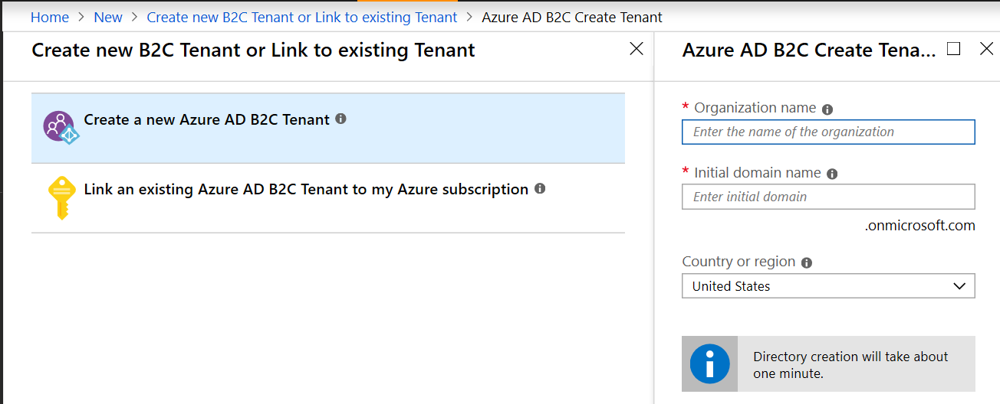
- Um einen vorhandenen Azure AD B2C-Mandant für das Azure-Abonnement zu verknüpfen: Verwenden Sie diese Option, wenn Sie bereits einen Azure AD B2C-Mandant haben, zu dem Sie einen Link erstellen möchten.
- Wählen Sie Einen vorhandenen Azure AD B2C-Mandant für das Azure-Abonnement verknüpfen.
- Für Azure AD B2C Mandant wählen Sie den entsprechenden B2C-Mandanten aus. Wenn im Auswahlfeld die Meldung Keine berechtigten B2C-Mandanten gefunden angezeigt wird, haben Sie keinen vorhandenen berechtigten B2C-Mandanten und müssen einen neuen erstellen.
- Für Ressourcengruppe wählen Sie Neu erstellen. Geben Sie einen Namen für die Ressourcengruppe ein, die den Mandanten enthalten soll, und wählen Sie die Option Standort der Ressourcengruppe und dann Erstellen.
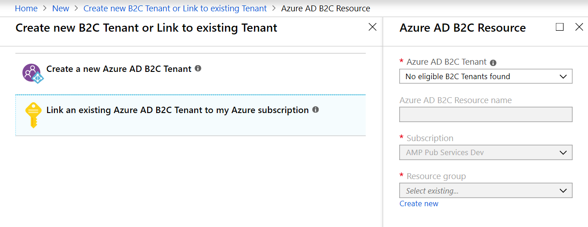
- Erstellen Sie einen neuen Azure AD B2C Mandanten: Verwenden Sie diese Option, um einen neuen AAD B2C-Mandanten zu erstellen.
Sobald das Neue Azure AD B2C-Verzeichnis erstellt wird (dies kann einige Momente dauern), wird im Dashboard ein Link zum neuen Verzeichnis angezeigt. Über diesen Link gelangen Sie zur Seite Willkommen bei Azure Active Directory B2C.
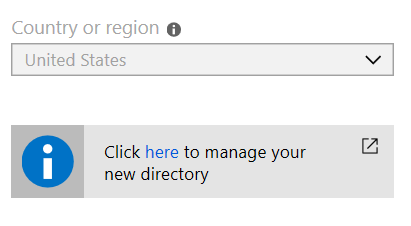
Note
Wenn Sie mehrere Abonnements in Ihrem Azure-Konto haben oder den B2C-Mandanten ohne Verknüpfung mit einem aktiven Abonnement eingerichtet haben, wird eine Anzeige Fehlerbehebung Sie darauf hinweisen, den Mandant mit einem Abonnement zu verknüpfen. Wählen Sie die Meldung zur Fehlerbehebung aus und befolgen Sie die Anweisungen, um das Abonnementproblem zu beheben.
Das folgende Bild zeigt ein Beispiel für eine Anzeige Azure AD B2C Fehlerbehebung.
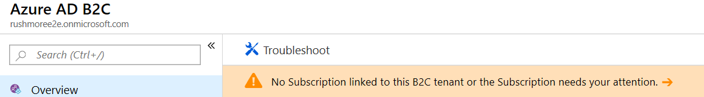
B2C Anwendungen erstellen
Sobald der B2C-Mandant erstellt wurde, erstellen Sie eine B2C-Anwendung innerhalb des Mandanten, um mit den Commerce-Aktionen zu interagieren.
Führen Sie folgende Schritte aus, um eine B2C-Anwendung zu erstellen.
- Wählen Sie im Azure-Portal Anwendungen (Vorgänger) und dann Hinzufügen aus.
- Unter Name geben Sie den Namen der gewünschten AAD B2C-Anwendung ein.
- Unter Web App/Web API für Web-App/Web-API einschließen, wählen Sie Ja.
- Für Impliziten Fluss zulassen, wählen Sie Ja (der Standardwert).
- Unter Antwort-URL geben Sie Ihre dedizierten Antwort-URLs ein. Gehen Sie zu Antwort-URLs unten für Informationen zu Antwort-URLs und deren Formatierung.
- Für Native Client einschließen, wählen Sie Nein (der Standardwert).
- Wählen Sie Erstellen aus.
Antwort-URLs
Antwort-URLs sind wichtig, da sie eine Zulassungsliste der zurückgegebenen Domains bereitstellen, wenn Ihre Website Azure AD B2C zur Authentifizierung eines Benutzers aufruft. Dies ermöglicht die Rückkehr des authentifizierten Benutzers zur Domäne, bei der er sich anmeldet (Ihre Website-Domäne).
Im Feld Antwort-URL auf dem Bildschirm Azure AD B2C – Anwendungen > Neue Anwendung müssen Sie separate Zeilen für Ihre Site-Domain und (sobald Ihre Umgebung bereitgestellt ist) die von Commerce generierte URL hinzufügen. Diese URLs müssen immer ein gültiges URL-Format verwenden und dürfen nur Basis-URLs sein (keine nachgestellten Schrägstriche oder Pfade). Die Zeichenfolge /_msdyn365/authresp muss dann wie in den folgenden Beispielen an die Basis-URLs angehängt werden.
https://www.fabrikam.com/_msdyn365/authresp(Die Domäne sollte vollständig mit der E-Commerce-Domäne übereinstimmen. Wenn Sie mehrere Domänen haben, müssen Sie diese URL für jede Domäne hinzufügen.)https://fabrikam-prod.commerce.dynamics.com/_msdyn365/authresp
Benutzerflussrichtlinien erstellen
Benutzerflüsse sind die Richtlinien die Azure AD B2C verwendet, um eine sichere Anmeldung bereitzustellen, sich anzumelden, das Profil zu bearbeiten und für die Benutzererfahrung für vergessene Kennwörter. Dynamics 365 Commerce verwendet diesen Fluss, um die Richtlinienaktionen für die Interaktion mit dem Azure AD B2C-Mandant auszuführen. Wenn ein Benutzer mit diesen Richtlinien interagiert, werden sie an den Azure AD B2C-Mandant weitergeleitet, um die Aktionen auszuführen.
Azure AD B2C bietet drei grundlegende Benutzerflusstypen:
- Registrieren Sie sich und melden Sie sich an
- Profilbearbeitung
- Kennwort zurücksetzen
Sie können die Standardbenutzerflüsse verwenden, die von Azure AD bereitgestellt werden, die eine Seite anzeigen, die von AAD B2C gehostete wird. Alternativ können Sie eine HTML-Seite erstellen, um das Erscheinungsbild dieser Benutzerflusserfahrungen zu steuern.
So passen Sie die Benutzerrichtlinienseiten an für Dynamics 365 Commerce, gehen Sie zu Richten Sie benutzerdefinierte Seiten für Benutzeranmeldungen ein. Weitere Informationen finden Sie unter Passen Sie die Benutzeroberfläche für Benutzererfahrungen an in Azure Active Directory B2C.
Erstellen Sie eine Registrierungs und Anmelde-Benutzerflussrichtlinie
Um eine Registrierungs- und Anmeldebenutzerflussrichtlinie zu erstellen, führen Sie die folgenden Schritte aus.
Wählen Sie im Azure-Portal die Option Benutzerflüsse (Richtlinien) im linken Navigationsbereich.
Auf der Seite Azure AD B2C – Benutzerfluss (Richtlinien) wählen Sie Neuer Benutzerfluss.
Auf der Registerkarte Empfohlen wählen Sie Registrieren und anmelden.
Geben Sie unter Name einen Richtliniennamen ein. Dieser Name wird anschließend mit einem vom Portal zugewiesenen Präfix angezeigt (z. B. B2C_1_).
Unter Identitätsanbieter wählen Sie das entsprechende Kontrollkästchen.
Unter Multifaktor-Authentifizierung wählen Sie die für Ihr Unternehmen geeignete Auswahl.
Unter Benutzerattribute und Ansprüche wählen Sie Optionen aus, um Attribute zu sammeln oder Ansprüche zurückzugeben. Für den Handel sind die folgenden Standardoptionen erforderlich:
Attribute sammeln Rückgabeanspruch E-Mail-Adresse E-Mail-Adressen Vorname Vorname Identitätsanbieter Nachname Nachname Objekt-ID des Benutzers Wählen Sie Erstellen aus.
Das folgende Bild ist ein Beispiel für die Azure AD B2C-Registrierung und Anmeldung des Benutzerflusses.
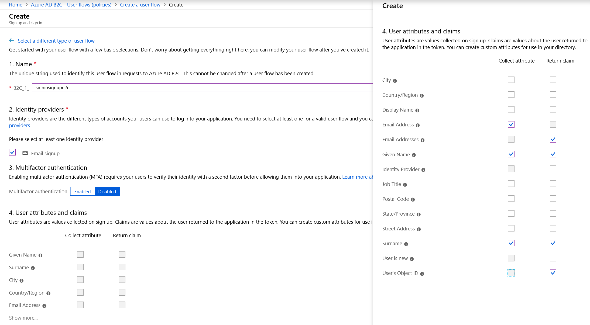
Das folgende Bild zeigt die Option Führen Sie den Benutzerfluss aus in der Azure AD B2C-Anmeldung und Anmeldung des Benutzerflusses.
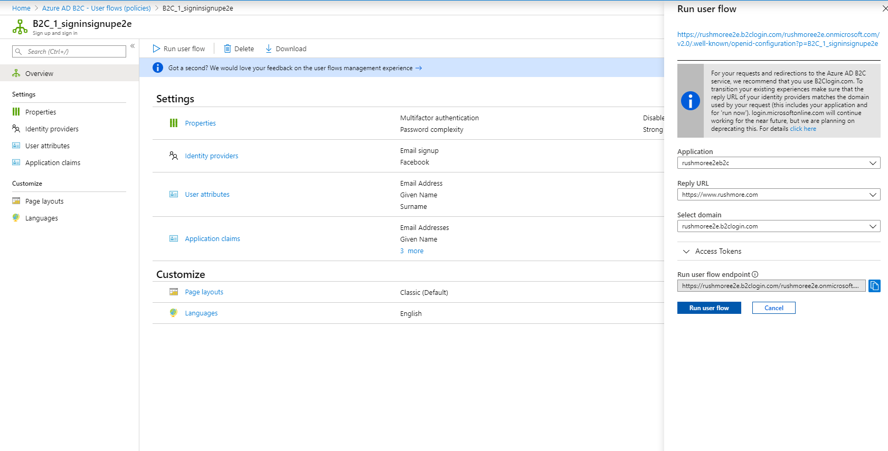
Erstellen Sie eine Benutzerflussrichtlinie zur Profilbearbeitung
Um eine Profilbearbeitungs-Benutzerflussrichtlinie zu erstellen, führen Sie die folgenden Schritte aus.
- Wählen Sie im Azure-Portal die Option Benutzerflüsse (Richtlinien) im linken Navigationsbereich.
- Auf der Seite Azure AD B2C – Benutzerfluss (Richtlinien) wählen Sie Neuer Benutzerfluss.
- Auf der Registerkarte Empfohlen wählen Sie Profilbearbeitung.
- Unter Name geben Sie den Benutzerfluss für die Profilbearbeitung ein. Dieser Name wird anschließend mit einem vom Portal zugewiesenen Präfix angezeigt (z. B. B2C_1_).
- Unter Identitätsanbieter wählen Lokale Kontoanmeldung.
- Wählen Sie unter Benutzerattribute eines der folgenden Kontrollkästchen aus:
- E-Mailadressen (Rückgabeanspruch nur)
- Vorname (Attribut sammeln und Rückgabeanspruch)
- Identitätsanbieter (Rückgabeanspruch nur)
- Nachname (Attribut sammeln und Rückgabeanspruch)
- Objekt-ID des Benutzers (Rückgabeanspruch nur)
- Wählen Sie Erstellen aus.
Das folgende Bild zeigt ein Beispiel für den Azure AD B2C Profilbearbeitungs-Benutzerfluss.
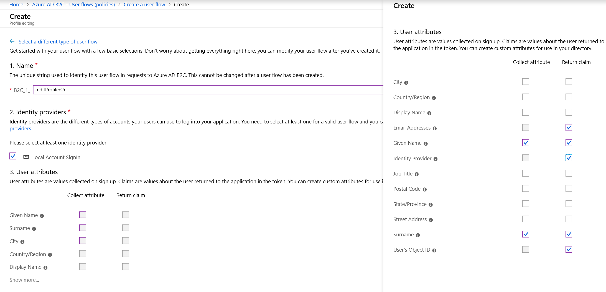
Erstellen Sie eine Benutzerflussrichtlinie zur Kennwortzurücksetzung
Um eine Kennwortzurücksetzungs-Benutzerflussrichtlinie zu erstellen, führen Sie die folgenden Schritte aus.
- Wählen Sie im Azure-Portal die Option Benutzerflüsse (Richtlinien) im linken Navigationsbereich.
- Auf der Seite Azure AD B2C – Benutzerfluss (Richtlinien) wählen Sie Neuer Benutzerfluss.
- Auf der Registerkarte Empfohlen wählen Sie Kennwort zurücksetzen.
- Unter Name geben Sie einen Namen für den Benutzerfluss zum Zurücksetzen des Kennworts ein.
- Im Abschnitt Identitätsanbieter wählen Sie Kennwort zurücksetzen mithilfe der E-Mail-Adresse aus.
- Wählen Sie Erstellen aus.
- Wählen Sie unter Anwendungsanspruch eines der folgenden Kontrollkästchen aus:
- E-Mail-Adressen
- Vorname
- Nachname
- Objekt-ID des Benutzers
- Wählen Sie Erstellen aus.
Das folgende Bild zeigt, wo Kennwort mit E-Mail-Adresse zurücksetzen im Azure AD Benutzerfluss zum Zurücksetzen des B2C-Passworts eingestellt werden muss.
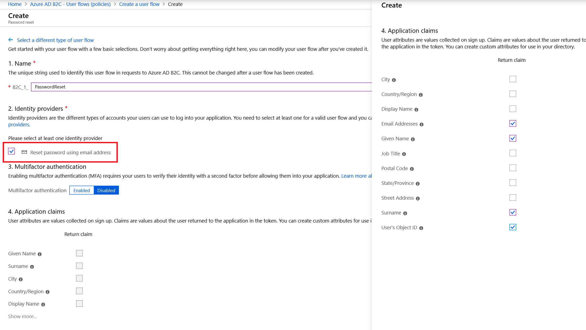
Anbieter sozialer Identität hinzufügen (optional)
Mit Anbietern sozialer Identität können Benutzer ihre sozialen Konten zur Authentifizierung verwenden. Das Hinzufügen der Authentifizierung des Anbieters sozialer Identität ist in Dynamics 365 Commerce optional.
Wenn die Anbieterauthentifizierung der sozialen Identität nicht hinzugefügt wird, ist die Standardeinstellung Azure AD B2C-Profile das Hauptprofil für Ihre Benutzerbasis. Benutzer wählen ihren eigenen Benutzernamen (ihre bevorzugte E-Mail-Adresse) und legen ein Passwort fest. Azure AD B2C authentifiziert Benutzer direkt.
Wenn die Authentifizierung eines Anbieters für soziale Identität hinzugefügt wird und ein Benutzer einen der angebotenen Anbieter für soziale Identität auswählt, wird weiterhin eine Entität in der Liste Azure AD B2C-Mandant erstellt. Azure AD B2C authentifiziert dann die Anmeldeinformationen des Benutzers beim Anbieter der sozialen Identität.
Note
Durch die Anmeldung des Identitätsanbieters wird ein Datensatz im B2C-Mandanten erstellt, jedoch in einem anderen Format als bei lokalen Konten, da die Referenz des externen Anbieters für soziale Identität zur Authentifizierung aufgerufen wird. Der Benutzer kann bei allen Anbietern sozialer Identitäten dieselbe E-Mail-Adresse verwenden. Dies bedeutet, dass der für die Authentifizierung verwendete E-Mail-Benutzername möglicherweise nicht für den Mandanten eindeutig ist. Azure AD B2C erzwingt nur, dass Benutzer auf lokalen B2C-Konten eine eindeutige E-Mail-Adresse haben.
Bevor Sie einen Anbieter für soziale Identität zur Authentifizierung hinzufügen können, müssen Sie zum Portal des Identitätsanbieters gehen und eine Anwendung für Identitätsanbieter einrichten, wie in der Anleitung Azure AD B2C-Dokumentation beschrieben. Eine Liste der Links zur Dokumentation finden Sie unten.
- Amazon
- Azure AD (Einzelmieter)
- Microsoft-Konto
- GitHub
- OpenID Connect
Fügen Sie einen Anbieter für soziale Identität hinzu und richten Sie ihn ein
Führen Sie die folgenden Schritte aus, um einen Anbieter für soziale Identität hinzuzufügen und einzurichten.
- Navigieren Sie im Azure-Portal zu Identitätsanbieter.
- Wählen Sie Hinzufügen aus. Der Bildschirm Identitätsanbieter hinzufügen wird angezeigt.
- Unter Name geben Sie den Namen ein, der den Benutzern auf Ihrem Anmeldebildschirm angezeigt werden soll.
- Unter Typ des Identitätsanbieters wählen Sie einen Identitätsanbieter aus der Liste aus.
- Wählen Sie OK.
- Wählen Sie Richten Sie diesen Identitätsanbieter ein, um auf den Bildschirm Richten Sie den Anbieter für soziale Identität ein zuzugreifen.
- Unter Kunden ID geben Sie die Client-ID ein, die Sie im Setup der Identitätsanbieteranwendung erhalten haben.
- Unter Geheimer Clientschlüssel geben Sie den geheimen Clientschlüssel ein, den Sie im Setup der Identitätsanbieteranwendung erhalten haben.
- Benutzerfluss für Anmelderichtlinien hinzufügen:
- Gehe zu Azure AD B2C – Benutzerflüsse (Richtlinien) > {Ihre Anmeldungsrichtlinie} > Identitätsanbieter.
- Wählen Sie jeden Identitätsanbieter aus, den Sie für Ihr Konto eingerichtet haben, um die Benutzerflussrichtlinie zum Anmelden/Registrieren anzuhängen. Um diese zu testen, wählen Sie Führen Sie den Benutzerfluss aus für jeden Identitätsanbieter. Auf einer neuen Registerkarte wird die Anmeldeseite mit dem Auswahlfeld für den neuen Identitätsanbieter angezeigt.
Das folgende Bild zeigt Beispiele für die Bildschirme Identitätsanbieter hinzufügen und Richten Sie den Anbieter für soziale Identität ein in Azure AD B2C.
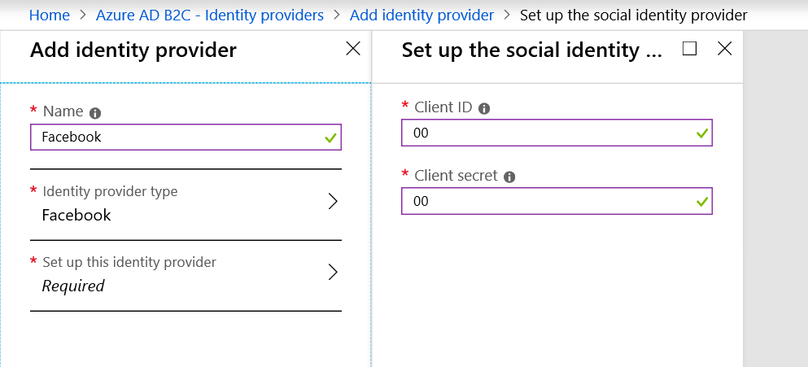
Das folgende Bild zeigt ein Beispiel für die Auswahl von Identitätsanbietern auf der Seite Azure AD B2C Identitätsanbieter.
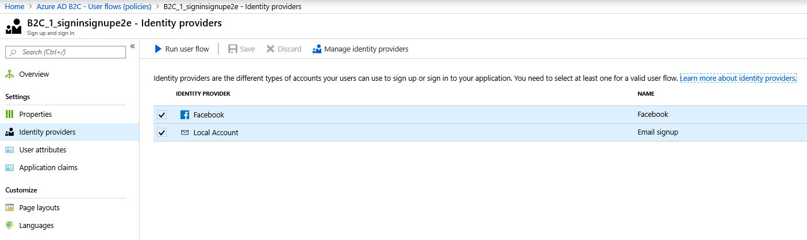
Das folgende Bild zeigt ein Beispiel für einen Standard-Anmeldebildschirm mit einer Anmeldeschaltfläche für Anbieter sozialer Identität.
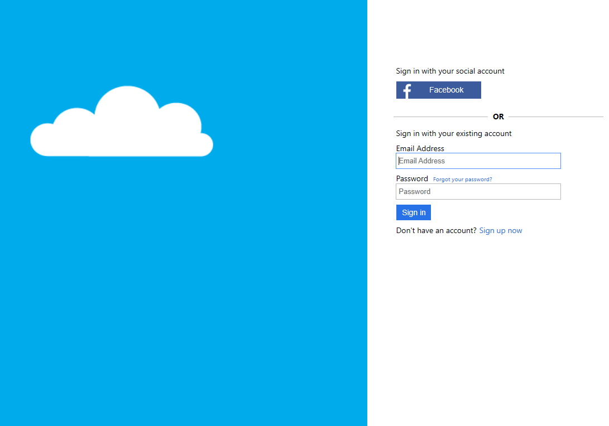
Aktualisieren Sie die Commerce-Zentrale mit den neuen Azure AD B2C-Informationen
Sobald die Azure AD B2C-Bereitstellungsschritte oben abgeschlossen ist, muss die Azure AD B2C-Anwendung muss in Ihrer Dynamics 365 Commerce Umgebung registriert werden.
Um den Hauptsitz mit den neuen Azure AD B2C Informationen zu aktualisieren, befolgen Sie diese Schritte.
- Gehen Sie im Handel zu Gemeinsame Commerce-Parameter und wählen Sie Identitätsanbieter im linken Menü.
- Unter Identitätsanbieter gehe Sie wie folgt vor:
- Im Kästchen Aussteller geben Sie im Feld die URL des Identitätsanbieters ein. Informationen zum Auffinden Ihrer Aussteller-URL finden Sie unter Erhalten Sie die Emittenten-URL unten.
- Geben Sie im Feld Name einen Namen für den Herausgeberdatensatz ein.
- Im Feld Art geben Sie Azure AD B2C (id_Token) ein.
- Unter Ausgewählte Parteien gehen Sie bei ausgewähltem oben genannten Element des B2C-Identitätsanbieters wie folgt vor:
- In dem Kästchen Kunden ID geben Sie im Feld Ihre B2C-Anwendungs-ID ein. Sie finden dies im Feld Anwendungs-ID der Eigenschaftenseite Ihrer B2C-Anwendung.
- In dem Kästchen Art geben Sie öffentlich ein.
- In dem Kästchen Benutzertyp geben Sie benutzerdefiniert ein.
- Wählen Sie im Aktionsbereich Speichern aus.
- Suchen Sie im Commerce-Suchfeld nach Verteilungsplan
- Im linken Navigationsmenü auf der Seite Verteilungspläne wählen Sie 1110 globale Konfiguration.
- Wählen Sie im Aktivitätsbereich Jetzt ausführen.
Erhalten Sie die Emittenten-URL
Führen Sie die folgenden Schritte aus, um die Aussteller-URL Ihres Identitätsanbieters zu erhalten.
- Erstellen Sie mit Ihrem B2C-Mandanten und Ihrer Richtlinie eine URL für Metadatenadressen im folgenden Format:
https://<B2CTENANTNAME>.b2clogin.com/<B2CTENANTNAME>.onmicrosoft.com/v2.0/.well-known/openid-configuration?p=<B2CSIGN-INPOLICY>- Beispiel:
https://d365plc.b2clogin.com/d365plc.onmicrosoft.com/v2.0/.well-known/openid-configuration?p=B2C_1_signinup.
- Beispiel:
- Geben Sie die URL der Metadatenadresse in eine Adressleiste des Browsers ein.
- Kopieren Sie in den Metadaten die Aussteller-URL des Identitätsanbieters (den Wert für Aussteller).
- Beispiel:
https://login.fabrikam.com/073405c3-0113-4f43-b5e2-df01266e24ae/v2.0/.
- Beispiel:
Konfigurieren Sie Ihren B2C-Mandanten im Commerce Site Builder
Einmal eingerichtet für Ihr Azure AD ist Ihr B2C-Mandant abgeschlossen. Sie müssen den B2C-Mandanten im Commerce Site Builder konfigurieren. Zu den Konfigurationsschritten gehören das Sammeln von B2C-Anwendungsinformationen aus dem Azure-Portal, das Eingeben dieser B2C-Anwendungsinformationen in den Site Builder und das Zuordnen der B2C-Anwendung zu Ihrer Site und Ihrem Kanal.
Sammeln Sie die erforderlichen Anwendungsinformationen
Führen Sie die folgenden Schritte aus, um die erforderlichen Anwendungsinformationen zu erfassen.
- Gehen Sie im Azure-Portal zu Start > Azure AD B2C – Anwendungen.
- Wählen Sie Ihre Anwendung aus und wählen Sie dann im linken Navigationsbereich Eigenschaften, um die Anwendungsdetails zu erhalten.
- Von dem Feld Anwendungs-ID sammeln Sie die Anwendungs-ID der B2C-Anwendung, die in Ihrem B2C-Mandanten erstellt wurde. Dies wird später als Client-GUID im Site Builder eingegeben.
- Unter Antwort-URL sammeln Sie die Antwort-URL.
- Gehe Sie zu Start > Azure AD B2C – Benutzerströme (Richtlinien) und sammeln Sie dann die Namen der einzelnen Benutzerflussrichtlinien.
Das folgende Bild zeigt ein Beispiel für die Azure AD B2C – Anwendungen Seite.
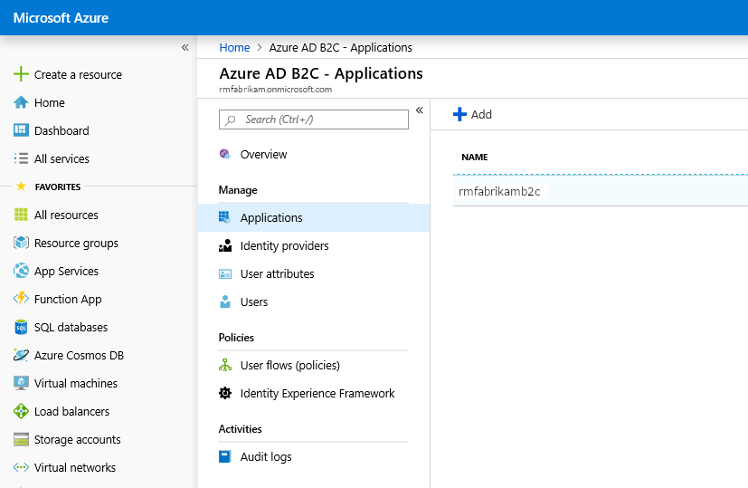
Das folgende Bild zeigt ein Beispiel für eine Anwendungsseite Eigenschaften in Azure AD B2C.
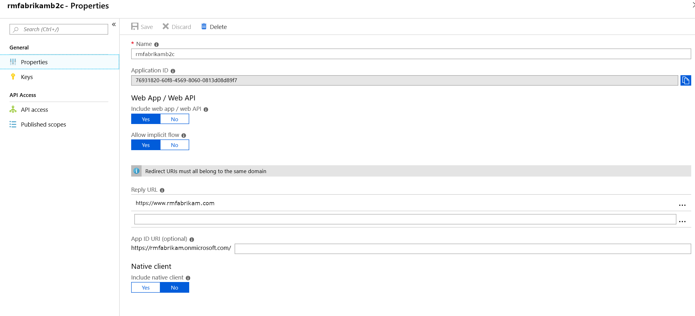
Das folgende Bild zeigt ein Beispiel für Benutzerflussrichtlinien auf der Seite Azure AD B2C – Benutzerströme (Richtlinien).
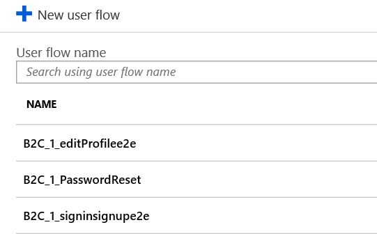
Geben Sie Ihre AAD B2C-Mandantenanwendungsinformationen in Commerce ein
Sie müssen Details der eingeben Azure AD B2C-Mandant in Commerce Site Builder einbinden, bevor der B2C-Mandant Ihren Sites zugeordnet wird.
Führen Sie die folgenden Schritte aus, um Commerce Ihre AAD B2C-Mandantenanwendungsinformationen hinzuzufügen.
Melden Sie sich als Administrator bei Commerce Site Builder für Ihre Umgebung an.
Wählen Sie im linken Navigationsbereich Mandant-Einstellungen aus, um den Bereich zu erweitern.
Wählen Sie unter Mandanteneinstellungen die Option B2C Einstellungen aus.
Im Hauptfenster neben B2C-Anwendungen wählen Sie Verwalten. (Wenn Ihr Mandant in der Liste der B2C-Anwendungen angezeigt wird, wurde er bereits von einem Administrator hinzugefügt. Stellen Sie sicher, dass die Elemente in Schritt 6 unten mit Ihrer B2C-Anwendung übereinstimmen.)
Wählen Sie B2C Bewerbung hinzufügen aus.
Geben Sie die folgenden erforderlichen Elemente in das angezeigte Formular ein und verwenden Sie dabei die Werte Ihres B2C-Mandanten und Ihrer Anwendung. Nicht erforderliche Felder (solche ohne Sternchen) können leer gelassen werden.
- Anwendungsname: Der Name für Ihre B2C-Anwendung, z. B. Fabrikam B2C.
- Name des Mandanten: Der Name Ihres B2C-Mandanten (verwenden Sie beispielsweise „fabrikam“, wenn die Domain für den B2C-Mandanten als „fabrikam.onmicrosoft.com“ angezeigt wird).
- Kennwor vergessen Richtlinien-ID: Die ID der Benutzerflussrichtlinie für vergessenes Kennwort, z.B. B2C_1_PasswordReset.
- Anmeldung Anmelderichtlinien-ID: Die ID der Anmelde- und Anmelde-Benutzerflussrichtlinie, z. B. B2C_1_signup_signin.
- Client-GUID: Die B2C-Anwendungs-ID, zum Beispiel „22290eb2-c52e-42e9-8b35-a2b0a3bcb9e6“.
- Profilrichtlinien-ID bearbeiten : Die Benutzerflussrichtlinien-ID für die Profilbearbeitung, z. B. B2C_1A_ProfileEdit.
Wählen Sie OK. Sie sollten nun den Namen Ihrer B2C-Anwendung in der Liste sehen.
Wählen Sie Speichern aus, um die Änderungen zu speichern.
Verknüpfen Sie die B2C-Anwendung mit Ihrer Site und Ihrem Kanal
Warning
Wenn Ihre Site bereits einer B2C-Anwendung zugeordnet ist, werden durch den Wechsel zu einer anderen B2C-Anwendung die aktuellen Referenzen entfernt, die für Benutzer eingerichtet wurden, die bereits in dieser Umgebung angemeldet sind. Bei einer Änderung stehen den Benutzern keine Anmeldeinformationen zur Verfügung, die der aktuell zugewiesenen B2C-Anwendung zugeordnet sind.
Aktualisieren Sie die B2C-Anwendung nur, wenn Sie die B2C-Anwendung des Kanals zum ersten Mal einrichten oder wenn Sie beabsichtigen, Benutzer mit der neuen B2C-Anwendung erneut mit neuen Anmeldeinformationen für diesen Kanal anzumelden. Seien Sie vorsichtig, wenn Sie Kanäle der B2C-Anwendungen zuordnen, und benennen Sie Anwendungen eindeutig. Wenn in den folgenden Schritten kein Kanal einer B2C-Anwendung zugeordnet ist, werden Benutzer, die sich bei diesem Kanal für Ihre Site anmelden, in die B2C-Anwendung eingegeben, die als Standard in Mandanteneinstellungen > B2C-Einstellungen der Liste B2C-Anwendungen angezeigt wird.
Um die B2C-Anwendung Ihrer Site und Ihrem Kanal zuzuweisen, folgen Sie diesen Schritten.
- Navigieren Sie im Commerce Site Builder zu Ihrer Site.
- Wählen Sie im linken Navigationsbereich Site-Einstellungen aus, um den Bereich zu erweitern.
- Unten Seiteneinstellungen, wählen Sie Kanäle.
- Im Hauptfenster unter Kanäle wählen Sie Ihren Kanal.
- Wählen Sie im Bereich Kanaleigenschaften rechts Ihren B2C-Anwendungsnamen aus dem Dropdown-Menü Wählen Sie B2C-Anwendung.
- Wählen Sie Schließen und dann Speichern und veröffentlichen.
Weitere B2C Informationen
Kundenmigration
Wenn Sie in Betracht ziehen, Kundendatensätze von einer früheren Plattform für Identitätsanbieter zu migrieren, arbeiten Sie bitte mit dem Dynamics 365 Commerce Team, um Ihre Kundenmigrationsanforderungen zu überprüfen.
Für weitere Azure AD B2C-Dokumentation zur Kundenmigration siehe Migrieren Sie Benutzer zu Azure Active Directory B2C.
Benutzerdefinierte Richtlinien
Weitere Informationen zum Anpassen finden Sie unter Azure AD B2C-Interaktionen und Richtlinienflüsse, die über das hinausgehen, was B2C-Standardrichtlinien bieten, siehe Benutzerdefinierte Richtlinien in Azure Active Directory B2C.
Sekundäradministrator
Ein optionales sekundäres Administratorkonto kann im Abschnitt Benutzer Ihres B2C-Mandanten hinzugefügt werden. Dies kann ein direktes Konto oder ein allgemeines Konto sein. Wenn Sie ein Konto für mehrere Teamressourcen freigeben müssen, kann auch ein gemeinsames Konto erstellt werden. Aufgrund der Empfindlichkeit der gespeicherten Daten in Azure AD B2C, sollte ein gemeinsames Konto gemäß den Sicherheitspraktiken Ihres Unternehmens genau überwacht werden.
Zusätzliche Ressourcen
Neuen E-Commerce-Mandanten bereitstellen
Zuordnen einer Dynamics 365 Commerce-Website zu einem Onlinekanal
Upload-URL bewirkt Massenumleitung (This is an external link)Eine Dynamics 365 Commerce-Website einem Online-Kanal zuordnen
Einrichten angepasster Seiten für die Benutzeranmeldungen
Mehrere B2C-Mandanten in einer Commerce-Umgebung konfigurieren
Hinzufügen von Unterstützung für ein Content Delivery Network (CDN)